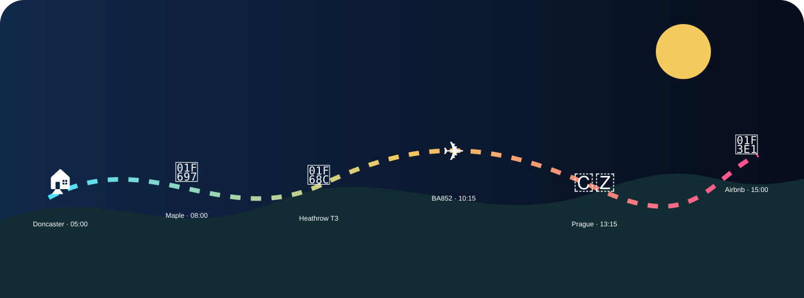

25–27 JULY 2026 · PRAGUE
Mr Worldwide.
Prague edition.
Drive. Fly. Check in. Café Savoy. Prague. Pitbull.
COUNTDOWN TO PITBULL
–Days
–Hours
–Minutes
–Seconds
Doors 15:00Stage time TBCArrival plan TBC
HEADLINE JOURNEY
Doncaster to the Airbnb
Confirmed timings and journey stages.

TRIP MODE
Countdown mode
Your app changes focus as the weekend unfolds.
HomePraguePitbullHome
CLICKABLE DAILY PLAN
Three days, fully timed
Tap a day for the detailed run-through.
BOOKING WALLET
Everything important
BA852
25 Jul · 10:15
Heathrow T3 → Prague T1
Dlouhá
Check-in 15:00
Checkout 11:00
Café Savoy
25 Jul · 18:00
Table for two
Pitbull
26 Jul · doors 15:00
Stage time TBC
PRAGUE SHORTLIST